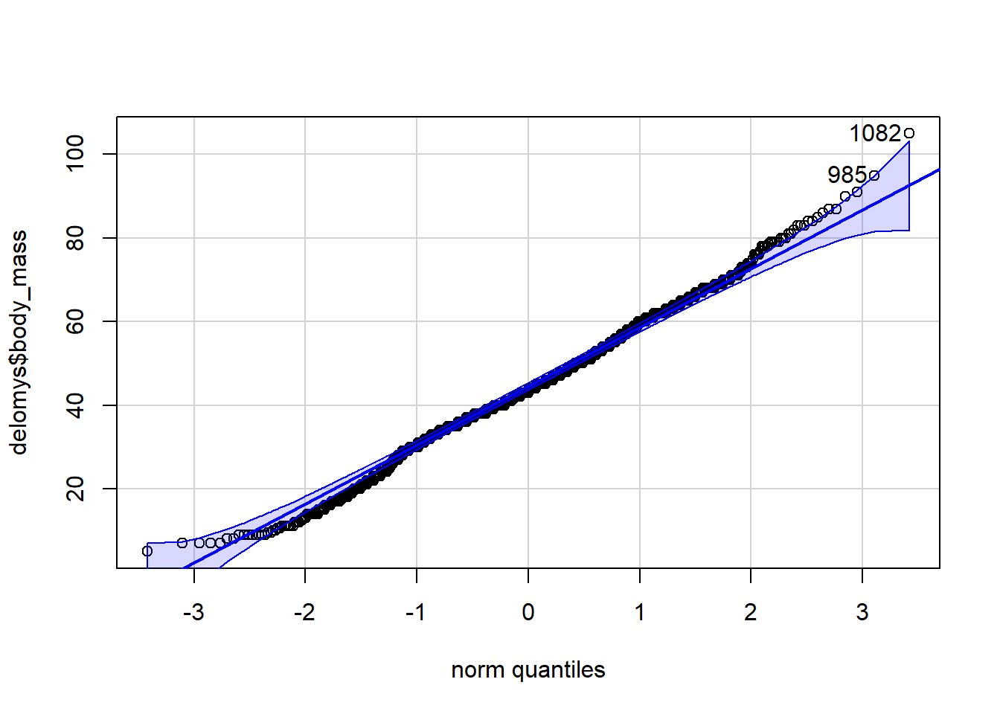
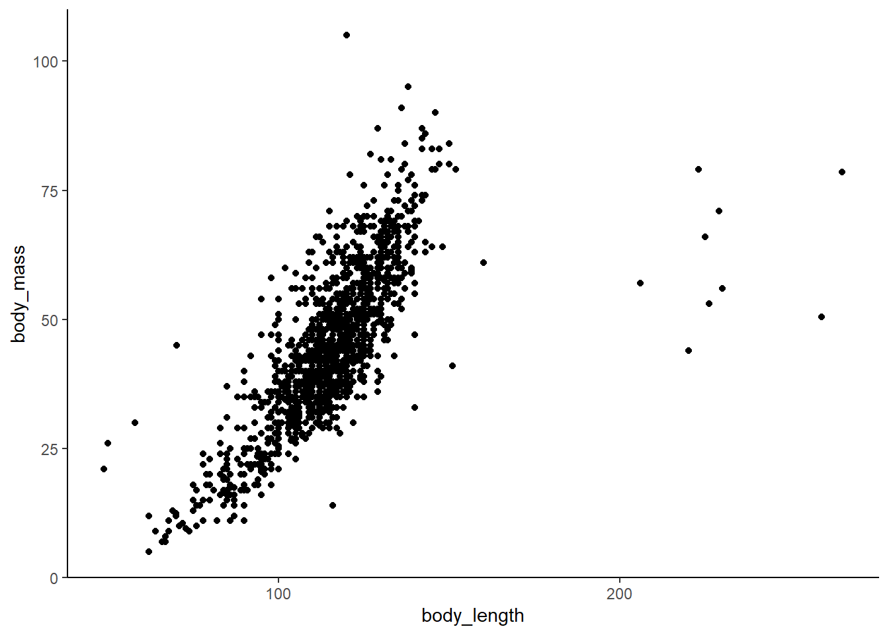

delomys <- read.csv("data/delomys.csv")Clase 3: Regulación de Poblaciones y Estimadores de abundancia
La distribución normal es una distribución de probabilidad continuamente distribuida que se utiliza comúnmente en el análisis de datos. Esta distribución es symmetric (simétrica) y tiene una forma de campana, con un pico en el centro y una cola que se extiende hacia los valores extremos.
Para los ejercicios de esta clase utilizaremos la base de datos delomys.csv
here() starts at C:/Users/David Murillo/Documents/GitHub/AnalisisParaEcologiakable(head(delomys))| observation | genus | binomial | body_mass | body_length | age | sex | longitude | latitude | status |
|---|---|---|---|---|---|---|---|---|---|
| 27526 | Delomys | Delomys dorsalis | 50.5 | 259 | adult | female | -48.22950 | -24.20256 | alive |
| 27528 | Delomys | Delomys dorsalis | 79.0 | 223 | adult | female | -48.22950 | -24.20256 | alive |
| 27529 | Delomys | Delomys dorsalis | 57.0 | 206 | adult | female | -48.22950 | -24.20256 | alive |
| 27530 | Delomys | Delomys dorsalis | 71.0 | 229 | adult | male | -48.22950 | -24.20256 | alive |
| 27533 | Delomys | Delomys dorsalis | 56.0 | 105 | adult | male | -50.39215 | -29.40807 | alive |
| 27534 | Delomys | Delomys dorsalis | 50.0 | 118 | adult | male | -50.39215 | -29.40807 | dead |
Como se puede observar la base de datos delomys presenta varias variables, si queremos sabe si alguna variable en especifico presenta distribucion normal pode utilizar la prueba de shapiro o realizar un grafico cuartil-cuartil.
Prueba de shapiro
Es importante tener en cuenta que la prueba de normalidad de Shapiro no es infalible y puede dar resultados incorrectos si el tamaño de la muestra es pequeño. Por lo general, se recomienda un tamaño de muestra de al menos 30 para utilizar la prueba de normalidad de Shapiro de manera fiable. Además, la prueba de normalidad de Shapiro puede ser sensible a los valores extremos o anómalos en los datos, por lo que puede ser necesario eliminar estos valores antes de realizar la prueba.
shapiro.test(delomys$body_mass)
Shapiro-Wilk normality test
data: delomys$body_mass
W = 0.99506, p-value = 4.33e-05Un gráfico de cuartil-cuartil, también conocido como gráfico Q-Q, es una herramienta gráfica utilizada para evaluar si un conjunto de datos sigue una distribución específica. En el caso de una distribución normal, se esperaría que los datos se ajusten a una línea recta en el gráfico.
library(car)Loading required package: carDataqqPlot(delomys$body_mass)
[1] 1082 985Es importante tener en cuenta que el gráfico de cuartil-cuartil es solo una herramienta visual y no proporciona una medida cuantitativa de la normalidad de los datos. Para obtener una medida cuantitativa, se puede utilizar una prueba estadística como la prueba de normalidad de Shapiro.
El análisis de varianza (ANOVA) es una técnica estadística que se utiliza para evaluar si hay diferencias significativas entre dos o más grupos en una variable. Se utiliza comúnmente para comparar los resultados de diferentes tratamientos o grupos de estudio en un experimento.
El análisis de varianza (ANOVA) de una vía es una técnica estadística utilizada para evaluar si hay diferencias significativas entre dos o más grupos en una sola variable. El ANOVA de una vía se utiliza cuando se tienen dos o más grupos y se quiere evaluar si hay diferencias significativas en una sola medida o variable.
table(delomys$status)
alive dead
1451 134 ANOVA_status <- aov(body_mass ~ status, data= delomys)
summary(ANOVA_status) Df Sum Sq Mean Sq F value Pr(>F)
status 1 39 38.62 0.174 0.677
Residuals 1583 351416 221.99 El análisis de varianza (ANOVA) de dos vías es un método estadístico que se utiliza para comparar las diferencias entre dos o más grupos en una medida de interés. Se llama “ANOVA de dos vías” porque examina dos factores a la vez, cada uno de los cuales puede tener varios niveles o categorías.
table(delomys$status, delomys$sex)
female male
alive 721 727
dead 64 68ANOVA_status_sex <- aov(body_mass ~ status + sex, data= delomys)
summary(ANOVA_status_sex) Df Sum Sq Mean Sq F value Pr(>F)
status 1 14 14.5 0.066 0.797544
sex 1 3065 3064.9 13.949 0.000194 ***
Residuals 1577 346489 219.7
---
Signif. codes: 0 '***' 0.001 '**' 0.01 '*' 0.05 '.' 0.1 ' ' 1
5 observations deleted due to missingnessEl análisis multivariado de varianza (MANOVA) es un método estadístico que se utiliza para comparar las diferencias entre dos o más grupos en múltiples medidas al mismo tiempo. A diferencia del análisis de varianza (ANOVA), que se utiliza para comparar diferencias entre grupos en una sola medida, el MANOVA se utiliza para comparar diferencias en varias medidas simultáneamente.
delomys_manova <- manova(cbind(body_mass, body_length) ~ sex + status, data = delomys)
summary(delomys_manova) Df Pillai approx F num Df den Df Pr(>F)
sex 1 0.010151 8.0808 2 1576 0.0003224 ***
status 1 0.012816 10.2302 2 1576 3.852e-05 ***
Residuals 1577
---
Signif. codes: 0 '***' 0.001 '**' 0.01 '*' 0.05 '.' 0.1 ' ' 1El análisis de covarianza (ANCOVA) es un método estadístico que se utiliza para comparar las diferencias entre dos o más grupos en una medida de interés, teniendo en cuenta el efecto de una o más variables covariables. Una variable covariable es una variable que puede afectar el resultado de interés y que se mide o observa al mismo tiempo que el resultado de interés.
delomys_ancova <- Anova(lm(body_mass ~ sex + status + body_length, data = delomys))
delomys_ancovaAnova Table (Type II tests)
Response: body_mass
Sum Sq Df F value Pr(>F)
sex 192 1 1.9586 0.1618613
status 1229 1 12.5320 0.0004117 ***
body_length 191881 1 1955.9345 < 2.2e-16 ***
Residuals 154609 1576
---
Signif. codes: 0 '***' 0.001 '**' 0.01 '*' 0.05 '.' 0.1 ' ' 1El análisis de correlación es una técnica estadística que se utiliza para determinar si hay una relación entre dos variables. Esta relación se puede medir utilizando el coeficiente de correlación, que puede variar entre -1 y 1. Un coeficiente de correlación cercano a 1 indica una correlación positiva fuerte, lo que significa que a medida que una de las variables aumenta, la otra también aumenta de manera predecible. Un coeficiente de correlación cercano a -1 indica una correlación negativa fuerte, lo que significa que a medida que una de las variables aumenta, la otra disminuye de manera predecible. Un coeficiente de correlación cercano a 0 indica una correlación débil o nula entre las variables.
Prueba de correlación de pearson
cor.test(delomys$body_mass, delomys$body_length)
Pearson's product-moment correlation
data: delomys$body_mass and delomys$body_length
t = 44.463, df = 1583, p-value < 2.2e-16
alternative hypothesis: true correlation is not equal to 0
95 percent confidence interval:
0.7224776 0.7663251
sample estimates:
cor
0.7452058 Prueba de correlación de spearman
cor.test(delomys$body_mass, delomys$body_length, method = "spearman")Warning in cor.test.default(delomys$body_mass, delomys$body_length, method =
"spearman"): Cannot compute exact p-value with ties
Spearman's rank correlation rho
data: delomys$body_mass and delomys$body_length
S = 133498504, p-value < 2.2e-16
alternative hypothesis: true rho is not equal to 0
sample estimates:
rho
0.7988407 Grafico de correlacion
library(ggplot2)
ggplot(data= delomys, aes(x =body_length, y= body_mass))+
geom_point()+
theme_classic()